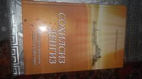

SDImom Buxoriyning buyuk hayoti va ilmiy merosiga bag'ishlangan tarixiy roman.
Bu kitob islom olamining buyuk muhaddisi Imom Muhammad ibn Ismoil Buxoriyning hayot yo'llari, ilmiy faoliyati va shaxsiyatiga bag'ishlangan tarixiy asardir. Asar ishonchli ilmiy manbalar va taniqli ulamolar asarlariga tayanib yozilgan. Kitob nomi Hofiz ibn Hajar Asqaloniyning Imom Buxoriy haqidagi 'u sohilsiz dengizga o'xshaydi' degan iborasidan olingan.